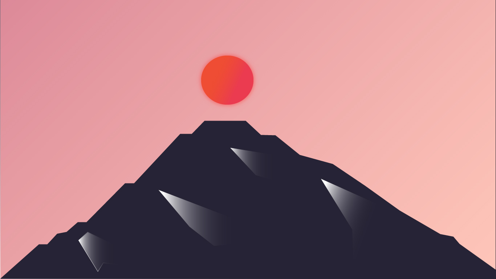

"Japanscapes" are a series of pieces that I created while I was learning Adobe Illustrator. I wanted to create simple landscapes of mountains while using bright colors for the background and playing around with a gradient for the sun and opacity for the moon. My inspiration for this piece was the Hokusai Mt. Fuji woodblock prints.
